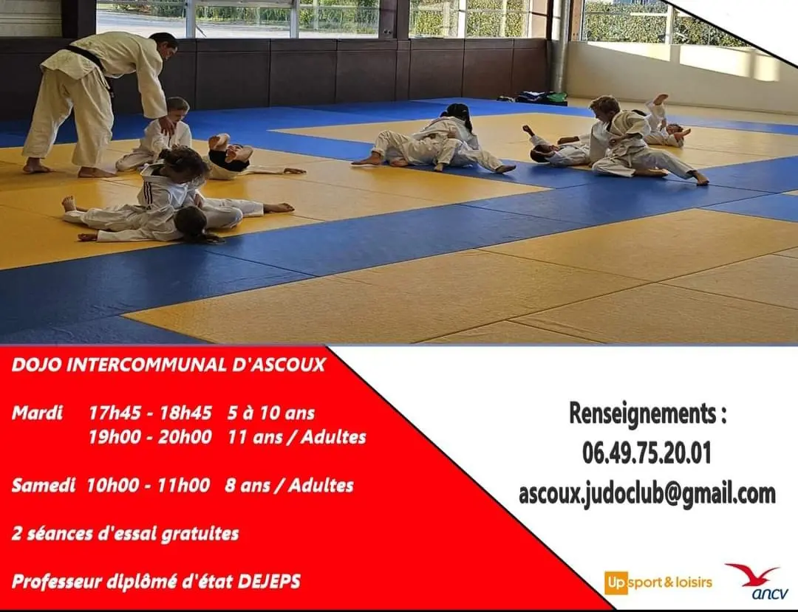
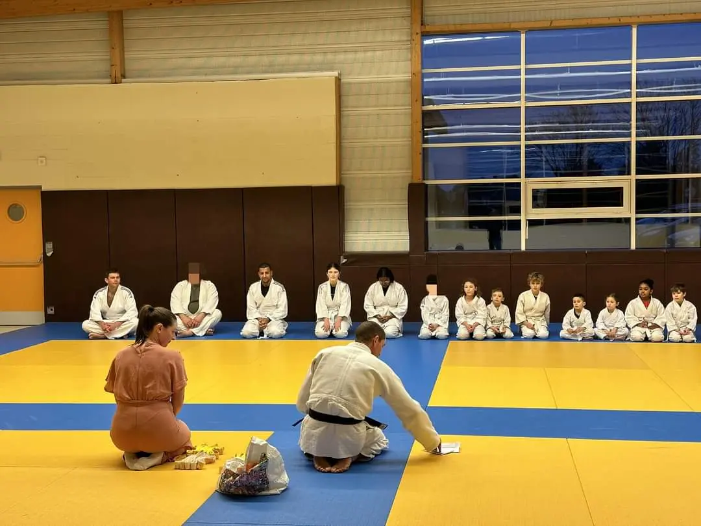
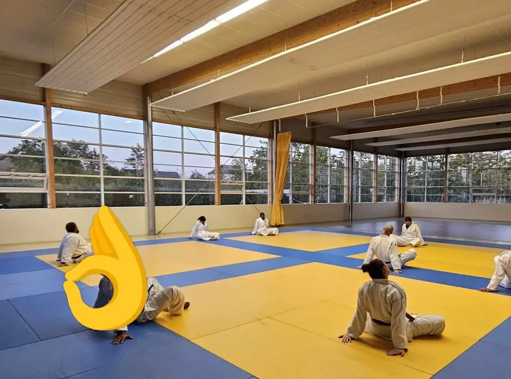
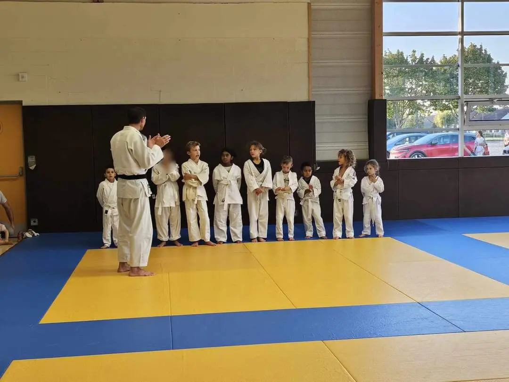
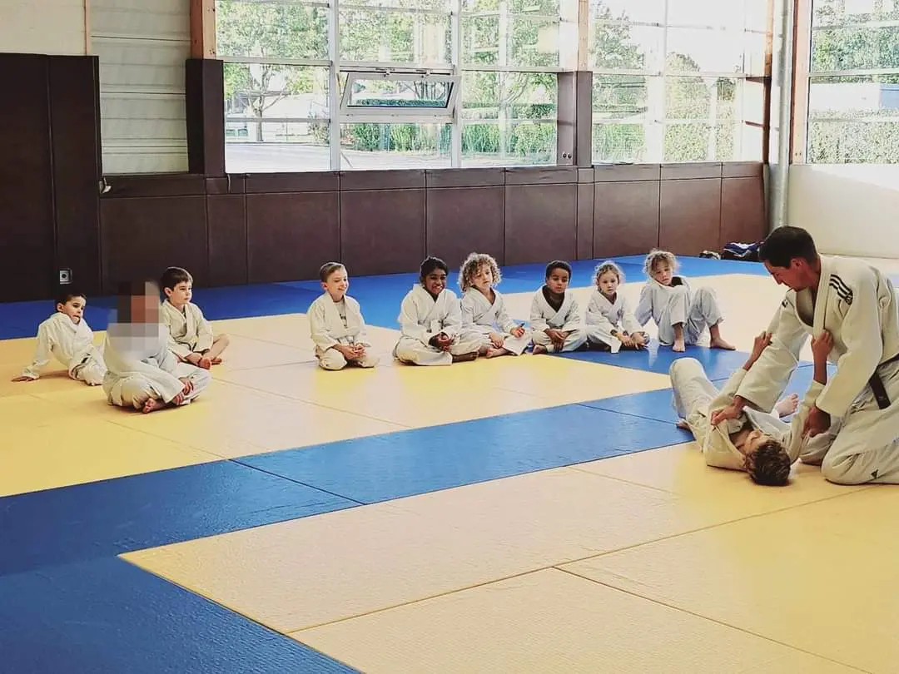

HORAIRES D'ENTRAINEMENT
Pour toutes informations complémentaires sur les événements de l'année, les entraînements et les cours, hésitez pas à nous contacter par mail ou téléphone.
LES COURS À ASCOUX
Le club offre des cours adaptés à chaque tranche d'âge, offrant une expérience unique pour les enfants de 5 à 10 ans et les adolescent, adultes de 11 et plus.
Voici quelques photos lors de notre première année au judo club d'Ascoux :



